團隊共用一份 Excel 登錄公司 IP，最後總是拿錯版本、蓋掉別人剛改的內容、用到衝突 IP 服務掛掉…… 這種痛苦，您肯定經歷過。 A shared Excel file for company IPs always ends in wrong versions, overwritten edits, and outages from duplicate IPs — you've surely been there.会社の IP を 1 つの Excel でチームが共用すると、最後はいつも版を取り違え、他人の編集を上書きし、IP の重複でサービスが止まります。きっと経験があるはずです。
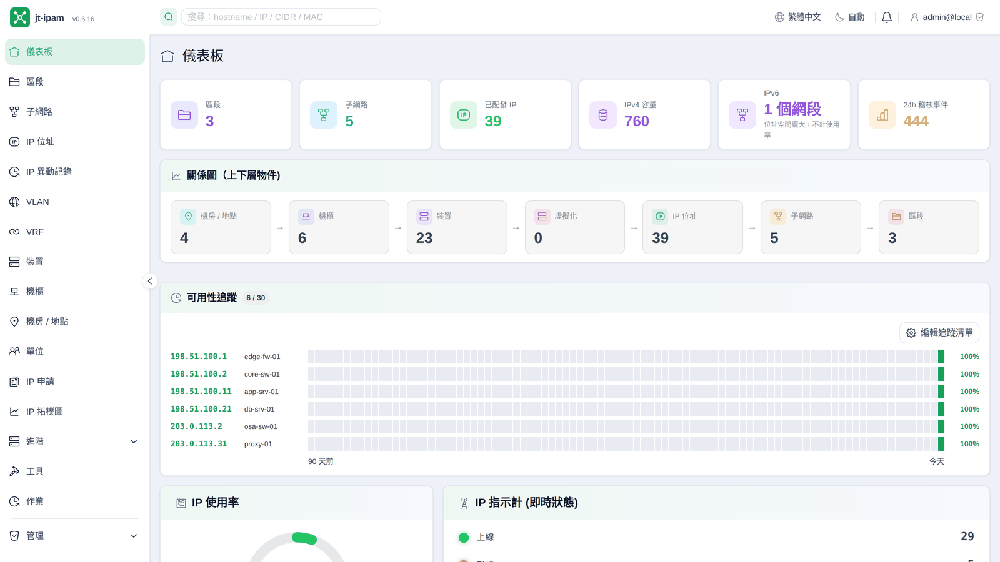
不論是集團、分公司、管理單位、客戶還是不同站點，都能把各自的 IP、子網路、裝置與機房收進同一套系統，依歸屬隔離並做物件層級授權。MSP、系統整合商、集團 IT 一個畫面就管完所有單位，不必每家各開一份試算表、各裝一套工具。Whether it's groups, subsidiaries, business units, clients or separate sites, keep each one's IPs, subnets, devices and rooms in a single system — isolated by ownership with object-level access control. MSPs, integrators and group IT manage every tenant from one screen, instead of a spreadsheet (and a tool) per client.グループ会社、子会社、管理部門、顧客、拠点のいずれであっても、それぞれの IP・サブネット・機器・サーバルームをひとつのシステムに収め、所属ごとに分離してオブジェクト単位で権限を与えられます。MSP・システムインテグレータ・グループ IT は、顧客ごとに表計算とツールを用意する代わりに、ひとつの画面ですべての組織を管理できます。
方便的搜尋、清楚的物件關係、現代的操作體驗。Convenient search, clear object relationships, a modern UX.使いやすい検索、明快なオブジェクト関係、現代的な操作感。
階層式管理、使用率視覺化、重疊網段偵測、CSV 匯入與通用表格匯出。Hierarchical management, usage visualization, overlap detection, CSV import & universal table export.階層的な管理、使用率の可視化、サブネット重複の検出、CSV の取り込みと汎用的な表のエクスポート。
整合多種系統資料自動推測 裝置↔子網路 鄰接，畫出實體 / 無線 / VPN / L3 連線。Multi-signal device↔subnet adjacency, drawing physical / wireless / VPN / L3 links.複数システムのデータから機器とサブネットの隣接関係を推定し、物理／無線／VPN／L3 の接続を描きます。
機櫃 U 位示意圖 (含半 U、前後雙面)，也支援鍍鉻層架與 IKEA IVAR 等層架、機房平面圖拖拉定位、世界地圖標記、SVG/PNG/draw.io 匯出；裝置明細直接標出本機在機櫃的位置。Rack U-diagrams (half-U & front/rear), plus chrome wire and IKEA IVAR-style shelving, floor-plan drag placement, world map, SVG/PNG/draw.io export; device page highlights its own rack position.ラックの U 位置図（ハーフ U と前面／背面に対応）、スチールラックや IKEA IVAR などのシェルフ、フロアプランでのドラッグ配置、世界地図へのピン留め、SVG / PNG / draw.io へのエクスポート。機器の詳細ページには、その機器自身のラック内位置が示されます。
主機名稱 / IP / CIDR / MAC 一處搜尋，OUI 廠商比對每月自動更新。Search hostname / IP / CIDR / MAC in one place; monthly OUI vendor refresh.ホスト名／IP／CIDR／MAC をひとつの場所で検索できます。OUI ベンダー情報は毎月自動更新されます。
對齊 OPNsense / pfSense / FortiGate / Palo Alto / MikroTik 的 NAT 規則、電路頻寬、VLAN/VRF 與客戶/單位歸屬。OPNsense/pfSense/FortiGate/Palo Alto/MikroTik-aligned NAT, circuit bandwidth, VLAN/VRF and customer/tenant ownership.OPNsense / pfSense / FortiGate / Palo Alto / MikroTik に対応した NAT ルール、回線帯域、VLAN / VRF、顧客・組織の所属。
主機名稱多來源優先序、逐欄人為編輯記錄、上線/離線判定、失聯 IP 篩選與批次回收。Multi-source hostname precedence, per-field edit log, liveness classification, stale-IP filtering & bulk reclaim.ホスト名の複数ソース優先順位、項目単位の手動編集の記録、オンライン／オフラインの判定、未使用 IP の絞り込みと一括回収。
內建主機上線與作業系統偵測（ICMP / ARP / 反查 / NetBIOS / mDNS / OS，可逐代理 / 子網路 / IP 設定要跑哪些探測），可直接在主機上跑；也能把掃描代理部署到其他網段或站點，透過金鑰安全回報、支援立即執行與自動更新，集中探索新上線與失聯 IP，不必每段網路各裝一套工具。Built-in host liveness and OS detection (ICMP / ARP / rDNS / NetBIOS / mDNS / OS, with per-agent/subnet/IP control over which probes run) runs on the server itself — or deploy remote agents to other segments and sites that report back securely over a key, with run-now & self-update, so new and stale IPs are discovered centrally without a separate tool per network.ホストの死活と OS の判定（ICMP / ARP / 逆引き / NetBIOS / mDNS / OS。どの探査を行うかはエージェント・サブネット・IP 単位で制御できます）をサーバ自身で実行できます。他のセグメントや拠点にリモートエージェントを配置すれば、鍵による安全な経路で結果を送り返し、即時実行と自動更新にも対応します。ネットワークごとに別のツールを入れなくても、新規や未使用の IP を一元的に把握できます。
商業或自簽憑證一次上傳集中保管（私鑰加密），純 bash 代理依排程把最新版自動派送到各站台的 nginx/apache/caddy/haproxy/Proxmox VE·PMG·PBS/Zimbra 等服務並重載，支援到期告警、手動續簽與自動更新；不必再逐台 scp 換憑證、重啟服務。Upload a commercial or self-signed certificate once into central, encrypted storage; a pure-bash agent pulls the latest version on a schedule and deploys it to each site's nginx / apache / caddy / haproxy / Proxmox VE·PMG·PBS / Zimbra and reloads the service, with expiry alerts, manual renew and self-update — no more scp-and-restart on every host.商用証明書も自己署名証明書も、一度アップロードすれば中央で暗号化保管されます（秘密鍵は暗号化）。純粋な bash のエージェントがスケジュールに従って最新版を取得し、各拠点の nginx / apache / caddy / haproxy / Proxmox VE・PMG・PBS / Zimbra などへ配備してサービスを再読み込みします。期限切れの警告、手動更新、自動アップデートにも対応。証明書の入れ替えのたびに全台へ scp して再起動する必要はもうありません。
直接從 IP 或裝置在瀏覽器開 SSH 終端機、SFTP 檔案瀏覽器（上下傳檔案）、RDP / VNC 桌面、Proxmox VE 主控台（VM noVNC / CT xterm）與 BMC 序列主控台（IPMI SOL，不經作業系統的獨立連線）（RDP / VNC / PVE / BMC 為 Beta），免裝 PuTTY / 遠端桌面用戶端 / 各廠 KVM；連線帳密預設不儲存，也可選擇存進個人加密金庫（by-user、AES-GCM）；依逐物件權限控管誰能連，每次連線都留稽核，並可送出 Ctrl + Alt + Del 等被系統攔截的特殊組合鍵。BMC 主控台內建序列主控台設定教學（找 ttyS、加 console=、serial-getty）。Open SSH terminals, an SFTP file browser (upload/download), RDP / VNC desktops, a Proxmox VE console (noVNC / xterm) and a BMC out-of-band serial console (IPMI SOL) (RDP / VNC / PVE / BMC Beta) right from an IP or device in the browser — no PuTTY / remote-desktop client / vendor KVM; credentials are not stored by default (optional per-user AES-GCM vault), per-object permissions on who may connect, every session audited, and special combos like Ctrl + Alt + Del you can send. The BMC console ships a built-in serial-console setup guide (find ttyS, add console=, serial-getty).IP や機器から直接、ブラウザで SSH 端末・SFTP ファイルブラウザ（アップロード／ダウンロード）・RDP / VNC デスクトップ・Proxmox VE コンソール（VM は noVNC、CT は xterm）・BMC シリアルコンソール（IPMI SOL。OS を介さない独立した経路）を開けます（RDP / VNC / PVE / BMC は Beta）。PuTTY やリモートデスクトップクライアント、各社の KVM を入れる必要はありません。接続時の資格情報は既定では保存せず、必要なら利用者ごとの暗号化保管庫（ユーザー単位・AES-GCM）に保存できます。誰が接続してよいかはオブジェクト単位で制御し、接続のたびに監査に残り、Ctrl + Alt + Del のように OS が横取りする特殊なキーの組み合わせも送れます。BMC コンソールにはシリアルコンソールの設定ガイド（ttyS の特定、console= の追加、serial-getty）が組み込まれています。
結合 LLM Server 在自家機房跑自然語言查詢與語意搜尋，預設資料不外送；並提供 MCP server，讓外部 LLM 客戶端直接操作 IPAM。Natural-language queries and semantic search via LLM Server, on-prem by default (data never leaves); plus an MCP server so external LLM clients can drive the IPAM directly.LLM サーバーと組み合わせて、自然言語での問い合わせとセマンティック検索を自社のサーバルーム内で実行します。既定でデータは外部に出ません。さらに MCP サーバーを提供し、外部の LLM クライアントから IPAM を直接操作できます。
物件級 RBAC（7 種物件、階層繼承、5 個內建角色），子網路 / 裝置 / IP 皆可歸屬單位或客戶：一套系統就能分隔管理多家公司、集團與站點。Object-level RBAC (7 object types, cascading inheritance, 5 built-in roles); subnets / devices / IPs all belong to a tenant or client — one system manages many companies, groups and sites with isolation.オブジェクト単位の RBAC（7 種類のオブジェクト、階層継承、5 つの組み込みロール）。サブネット・機器・IP はいずれも組織や顧客に所属させられるため、ひとつのシステムで複数の会社・グループ・拠点を分離して管理できます。
不是一堆各自獨立的清單：每個物件都有明確的上下層與關聯。Not a pile of disconnected lists — every object has a clear hierarchy and links.ばらばらの一覧の寄せ集めではありません。どのオブジェクトにも明確な階層と関連があります。
這條鏈不是裝飾：每一層都能往下鑽、彼此互相關聯，而且全部可再歸屬到單位 / 客戶。This chain isn't decorative: every level drills down, links to the others, and can be owned by a tenant / client.この連なりは飾りではありません。どの階層からも掘り下げられ、互いに関連し、そのすべてを組織や顧客に所属させられます。
區段 → 子網路 → IP 位址。一層層收斂，每個位址都知道屬於哪個網段、哪個區段，使用率與閒置一目了然。Section → Subnet → IP address. Each IP knows which subnet and section it belongs to, with utilization and free space at a glance.セクション → サブネット → IP アドレス。各 IP はどのサブネット・どのセクションに属するかを持ち、使用率と空き範囲がひと目で分かります。
機房 / 地點 → 機櫃 → 裝置。對應真實機房平面與機櫃 U 位，一台裝置在哪個機房、哪座機櫃、第幾 U 都查得到。Room / Site → Rack → Device. Mirrors the real floor plan and U positions — find which room, rack and U slot any device occupies.サーバルーム／拠点 → ラック → 機器。実際のフロア配置と U 位置をそのまま写し取り、どの機器がどの部屋のどのラックの何 U にあるかを追えます。
一個 IP 指派給一台裝置、虛擬化的 VM 對應裝置並佔用 IP；點任一節點即可深入，全部還能再歸屬到單位 / 客戶做隔離與授權。An IP maps to a device, VMs map to devices and consume IPs; click any node to drill in, and everything can be owned by a tenant / client for isolation and access control.IP は機器に割り当てられ、仮想化の VM は機器に対応して IP を消費します。どのノードからも掘り下げられ、そのすべてを組織や顧客に所属させて分離と権限付与が行えます。
中小企業、實驗室、工作室與分公司的設備，很多其實放在鍍鉻層架或 IKEA IVAR 上。jt-ipam 把層架當成正式的機架型態：畫得出來、算得清楚，每台設備在第幾層、哪個位置都查得到 —— 不必硬把層架假裝成 42U 機櫃。In small businesses, labs, studios and branch offices, a lot of gear actually lives on chrome wire shelving or an IKEA IVAR. jt-ipam treats shelving as a first-class rack type: drawn the way it really looks, measured properly, and every device findable by level and position — no pretending your shelf is a 42U rack.中小企業・研究室・スタジオ・支社では、機器の多くが実はスチールラックや IKEA IVAR の上に置かれています。jt-ipam はシェルフを正式なラックの種類として扱います。実物どおりに描かれ、寸法も正しく計算され、どの機器が何段目のどこにあるかも調べられます。シェルフを 42U ラックに見立てる必要はありません。
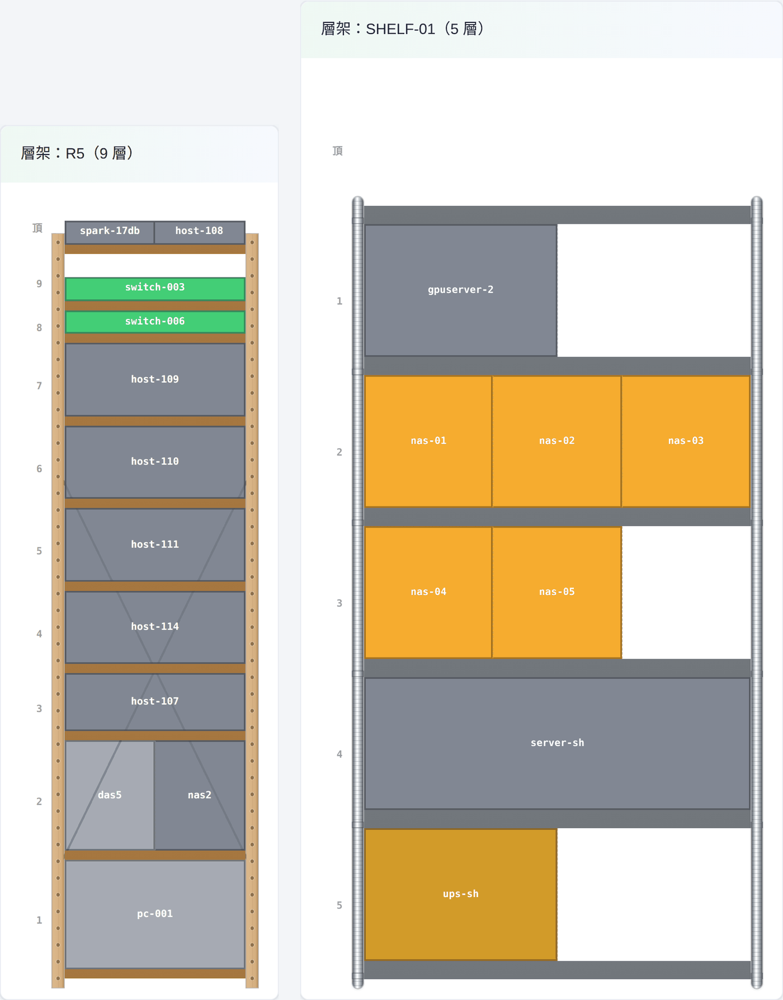
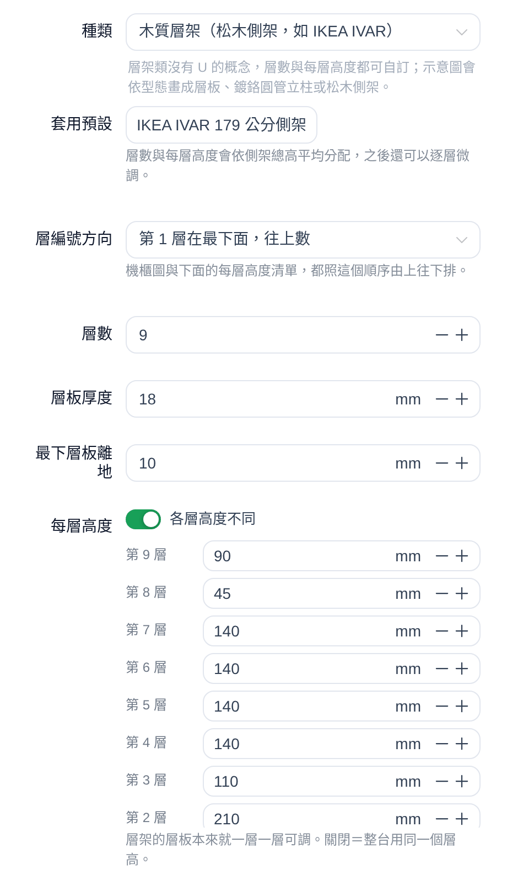
IKEA 與 IVAR 是 Inter IKEA Systems B.V. 的商標；jt-ipam 與其沒有任何關係，這裡只是說明相容的層架規格。IKEA and IVAR are trademarks of Inter IKEA Systems B.V. jt-ipam is not affiliated with them; the names are used only to describe compatible shelf dimensions.IKEA および IVAR は Inter IKEA Systems B.V. の商標です。jt-ipam はこれらと一切関係がなく、対応するシェルフの寸法を説明するためにのみ名称を使用しています。
jt-ipam 的核心是把 IP、子網路、裝置與整合進來的網路狀態集中記錄、管理，作為你的「事實來源」與稽核依據。它不會主動發放或回收實體位址、不會攔截流量、也不會推送 DHCP 拒絕或防火牆封鎖規則去阻止未登錄的裝置上線。像「IP 申請審核」這類功能屬於管理簽核紀錄：核准或駁回只影響系統內的登錄與授權，不會在網路層面強制阻擋——實際的位址發放與封鎖，仍由你的 DHCP、防火牆、NAC 等系統負責。jt-ipam's job is to centrally record and manage IPs, subnets, devices and the network state it integrates — your source of truth and audit trail. It does not hand out or revoke real addresses, intercept traffic, or push DHCP-deny / firewall-block rules to stop unregistered devices from getting online. Workflows like "IP request approval" are administrative sign-off records: approving or rejecting only affects records and authorization inside the system, never enforcement on the wire — actual address assignment and blocking remain the job of your DHCP, firewall and NAC.jt-ipam の役割は、IP・サブネット・機器と連携先から取り込んだネットワークの状態を集中的に記録・管理し、「事実の出どころ」と監査の根拠にすることです。実際のアドレスを配ったり取り上げたり、通信を遮ったり、未登録の機器を止めるために DHCP の拒否やファイアウォールの遮断ルールを投入することはありません。「IP 申請の承認」のような機能は管理上の承認記録です。承認や却下はシステム内の登録と権限にのみ影響し、ネットワーク上で強制することはありません。実際のアドレス払い出しと遮断は、引き続き DHCP・ファイアウォール・NAC の仕事です。
核心價值就是「整合」：把你既有的多套開源網路與安全軟體串成一個檢視中樞：集中檢視、單向拉取、不改動來源。並支援從 phpIPAM 匯入既有資料、無痛遷移。Integration is the core value: tie your existing open-source network & security tools into one hub — centralized, pull-only, non-invasive. Plus data import & smooth migration from phpIPAM.中心的な価値は「連携」です。既存のオープンソースのネットワーク／セキュリティ製品をひとつの閲覧ハブにまとめます。集中閲覧、取得のみ、元のシステムは変更しません。さらに phpIPAM からのデータ取り込みに対応し、移行もスムーズです。
所有整合皆為單向拉取、不改動來源；資料集中在自家機房。All integrations are pull-only and non-invasive; data stays centralized on-prem.すべての連携は取得のみで元のシステムを変更しません。データは自社設備内に集約されます。
jt-ipam 即時產生 IP → 主機名稱 / FQDN 對照表，供 Graylog「DSV File from HTTP」配接器抓取，把記錄中只有 IP 的事件自動補上可讀名稱。在管理區開關、設定路徑與 token 即可，詳細欄位與格式說明見設定頁與 README。jt-ipam serves a live IP → hostname / FQDN lookup table for Graylog's "DSV File from HTTP" adapter, so log events carrying only an IP get a readable name automatically. Toggle it and set the path and token in the admin area; field and format details are on the settings page and in the README.jt-ipam は IP → ホスト名 / FQDN の対照表をリアルタイムに生成し、Graylog の「DSV File from HTTP」アダプタから取得できるようにします。IP しか含まないログイベントに、読める名前が自動で付きます。管理画面で有効化し、パスとトークンを設定するだけです。項目や形式の詳細は設定ページと README を参照してください。
整合看到一個 IPAM 裡還沒有的位址時，行為不是每個來源都一樣 —— 而且會直接影響「未授權 IP」異常偵測（它的判定是「ARP 看得到、IPAM 沒有」）。When an integration sees an address IPAM does not have, the behaviour differs by source — and it directly affects the "unauthorised IPs" anomaly check, whose test is "seen in ARP, absent from IPAM".連携先が IPAM にまだ無いアドレスを見つけたとき、その扱いはソースごとに異なります。これは「未許可 IP」の異常検知（判定基準は「ARP では見えるが IPAM には無い」）に直接影響します。
| 來源Sourceソース | IPAM 沒有該位址時When IPAM has no such addressIPAM にそのアドレスが無いとき | 開關Toggle切り替え | 預設Default既定 |
|---|---|---|---|
| 掃描代理Scan agentスキャンエージェント | 可自動建立（限已指派且有開掃描的子網路）May create (only in assigned subnets with scanning on)作成することがあります（割り当て済みかつスキャン有効なサブネットに限る） | 自動收錄未登錄的 IPRecord unregistered IPs automatically未登録の IP を自動的に記録する | ✕ 預設關閉off by default既定で無効 |
| LibreNMS | 可自動建立（只建裝置主 IP）May create (device primary IP only)作成することがあります（機器の主 IP のみ） | 「自動建立探索到的 IP」"Auto-create discovered IPs"「検出した IP を自動作成する」 | ✓ 預設開啟on by default既定で有効 |
| Proxmox VE | 可自動建立May create作成することがあります | 「信任虛擬化取得的 IP」Trust addresses from virtualization「仮想化から得た IP を信頼する」 | ✕ 預設關閉off by default既定で無効 |
| VMware / ESXi | 可自動建立May create作成することがあります | 「信任虛擬化取得的 IP」Trust addresses from virtualization「仮想化から得た IP を信頼する」 | ✕ 預設關閉off by default既定で無効 |
| OPNsense / pfSense | 可自動建立（DHCP 租約）May create (DHCP leases)作成することがあります（DHCP リース） | 「自動建立 IPAM 沒有的位址」Create addresses IPAM does not haveIPAM に無いアドレスを作成する | ✕ 預設關閉off by default既定で無効 |
| AdGuard / Wazuh / Zabbix / DNS / Windows DHCP / FortiGate | 只比對既有，不建Match only, never create既存との照合のみ。作成しません | — | — |
| CSV 匯入 / phpIPAM 遷移CSV import / phpIPAM migrationCSV 取り込み／phpIPAM 移行 | 依匯入內容建立（使用者明示的動作）Created from imported data (explicit user action)取り込んだ内容に従って作成（利用者の明示的な操作） | — | — |
共通規則：自動建立一律走同一套判斷 —— 把位址放進「包含它的最小網段」；如果分不出來該放哪個，就不建。例：10.1.1.5 同時落在 10.0.0.0/8 與 10.1.1.0/24，會放進比較小的 10.1.1.0/24；但如果甲、乙兩個單位各自都有一個 192.168.1.0/24，系統無從得知這台機器算誰的，就不建立 —— 把紀錄掛到錯的單位，比沒有這筆紀錄更糟。只要在該整合設定裡指定「限定子網路範圍」（只勾自己那組網段），就分得出來了。Shared rule: every auto-creation path uses one decision — put the address in the smallest subnet that contains it; if which one is unclear, create nothing. For example 10.1.1.5 sits inside both 10.0.0.0/8 and 10.1.1.0/24, so it goes into the smaller 10.1.1.0/24; but if tenants A and B each have their own 192.168.1.0/24, there is no way to tell whose machine it is, so nothing is created — filing under the wrong tenant is worse than having no record. Setting that integration's subnet scope to your own subnets makes the choice clear again.共通ルール：自動作成はすべて同じ判断を通ります。そのアドレスを含む最小のサブネットに入れる。どれに入れるべきか判別できなければ、何も作らない。たとえば 10.1.1.5 は 10.0.0.0/8 と 10.1.1.0/24 の両方に含まれるので、小さい方の 10.1.1.0/24 に入ります。しかし組織 A と組織 B がそれぞれ 192.168.1.0/24 を持っている場合、その機器がどちらのものか知る術がないため何も作成しません。間違った組織に記録するくらいなら、記録が無い方がましだからです。その連携の設定で「対象サブネットの範囲」を自分たちのサブネットだけに絞れば、再び判別できるようになります。
⚠️ 開啟自動建立＝放棄一部分偵測能力。拿得到位址的機器不等於該被收錄的機器：私接的設備一旦被自動建進 IPAM，就不會再出現在「未授權 IP」異常偵測裡。自動建立的紀錄在 IP 清單上會標示為「自動收錄（未登記）」，請定期檢視。⚠️ Enabling auto-creation trades away part of your detection. A machine that obtained an address is not necessarily one that belongs in IPAM: once an unauthorised device is recorded, it no longer appears under "unauthorised IPs". Auto-created records are flagged "Auto-recorded (unregistered)" in the IP list — review them regularly.⚠️ 自動作成を有効にすると、検知能力の一部を手放すことになります。アドレスを取得できた機器が、記録されるべき機器とは限りません。無断で接続された機器がいったん IPAM に自動登録されると、「未許可 IP」の異常検知には二度と現れません。自動作成されたレコードは IP 一覧で「自動記録（未登録）」と表示されるので、定期的に見直してください。
實際操作畫面 + 說明。Real screens with explanations.実際の操作画面と解説。
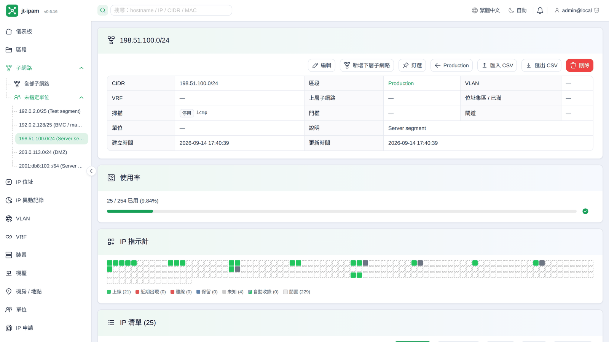
從區段、子網路到單一 IP 的階層式管理，一眼掌握每個網段的使用率與閒置區間。最上方的「IP 指示計」用紅 / 綠 / 灰方格即時呈現整個網段每個位址的上線、離線、未知狀態，哪裡離線、哪裡還空著一目了然。另支援 DHCP 範圍標示、重疊網段偵測、失聯 IP 篩選與批次回收；可從 CSV 匯入，任何表格也能匯出成 CSV / Excel / ODS / Markdown，再也不用在試算表裡手動對位。Hierarchical management from sections to subnets down to each IP, with utilization and free-range gaps at a glance. The “IP indicator” grid at the top shows every address's online / offline / unknown state in red / green / grey in real time — gaps and free slots are obvious. Plus DHCP-range marking, overlap detection, stale-IP filtering and bulk reclaim; import from CSV and export any table to CSV / Excel / ODS / Markdown — no more manual bookkeeping in a spreadsheet.セクションからサブネット、個々の IP まで階層的に管理し、各ネットワークの使用率と空き範囲をひと目で把握できます。上部の「IP インジケータ」は、そのネットワーク内の全アドレスのオンライン／オフライン／不明を赤・緑・灰のマス目でリアルタイムに表示するので、どこが落ちていてどこが空いているかがすぐ分かります。さらに DHCP 範囲の表示、サブネット重複の検出、未使用 IP の絞り込みと一括回収に対応。CSV から取り込め、どの表も CSV / Excel / ODS / Markdown へ書き出せるので、表計算で手作業の突き合わせをする必要はもうありません。
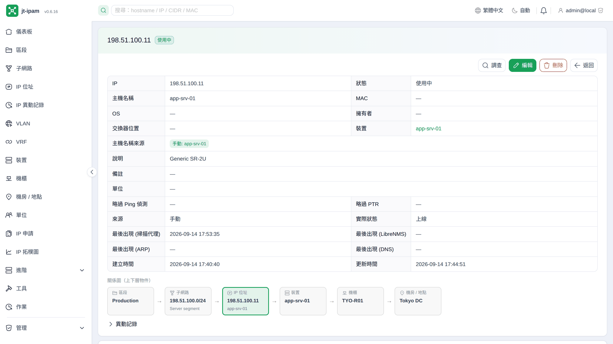
每個 IP 都有一份完整檔案：主機名稱依多來源優先序自動決定（掃描代理 / LibreNMS / DNS / 手動），並帶出 MAC 廠商、交換器埠位、所屬裝置與相關 NAT。下方還有「區段→子網路→IP→裝置」上下層關係圖，以及逐欄的人為異動記錄：誰在何時改了哪個欄位一清二楚，責任歸屬不再靠記憶。系統還會自動辨識 IP 與裝置的關聯（例如主機名稱對得上某一台裝置），管理者按一下「確認」即可把兩者串起來，不必手動翻找。Every IP gets a full record: the hostname is resolved by multi-source precedence (scan agent / LibreNMS / DNS / manual), alongside MAC vendor, switch port, owning device and related NAT. Below it sits a section→subnet→IP→device hierarchy graph and a per-field change log — exactly who changed which field and when, no guesswork. jt-ipam also auto-detects likely IP↔device matches (e.g. a hostname that matches a device) and links them with one click once the admin confirms — no manual hunting.どの IP にも完全な記録があります。ホスト名は複数ソースの優先順位（スキャンエージェント / LibreNMS / DNS / 手動）に従って自動的に決まり、MAC のベンダー、スイッチのポート、所属する機器、関連する NAT も併せて表示されます。その下には「セクション→サブネット→IP→機器」の階層関係図と、項目単位の変更履歴が並びます。誰がいつどの項目を変えたのかが明確で、記憶に頼る必要はありません。IP と機器の対応（たとえばホスト名が特定の機器と一致するなど）も自動的に検出され、管理者が「確認」を押すだけで結び付けられます。手作業で探し回る必要はありません。
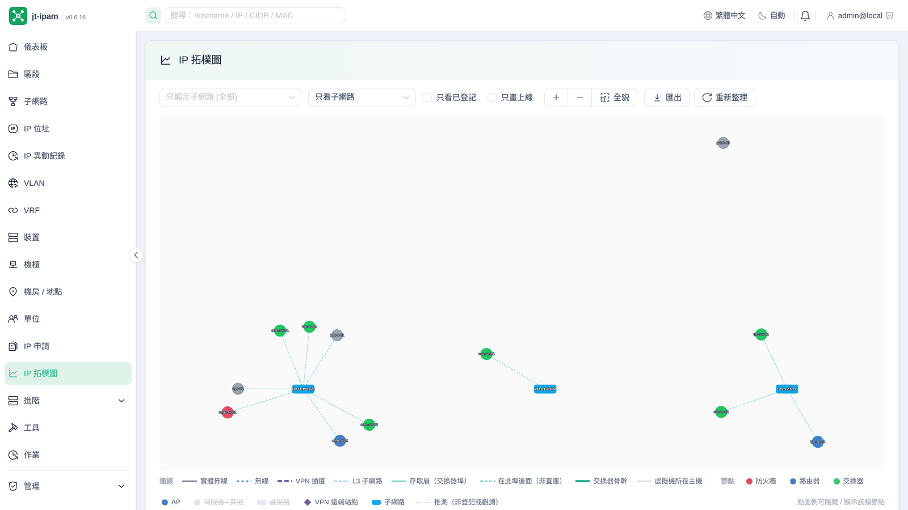
整合掃描代理、LibreNMS、OPNsense、pfSense、Proxmox VE、VMware ESXi / vCenter 等多種系統的資料，自動推測 裝置↔子網路 的鄰接關係，並把實體佈線、無線、站對站 VPN 與 L3 連線分別以不同線型畫出。可依子網路篩選、自由縮放，底部圖例的節點類別可點選，開關各類裝置 / 子網路要不要顯示；整張圖再匯出成 PNG / SVG / draw.io 放進維運文件。It combines data from the scan agent, LibreNMS, OPNsense, pfSense, Proxmox VE and VMware ESXi / vCenter to infer device↔subnet adjacency, drawing physical, wireless, site-to-site VPN and L3 links each with its own line style. Filter by subnet, zoom freely, click the node categories in the legend to toggle whether each device / subnet type is shown, and export the whole graph to PNG / SVG / draw.io for your runbooks.スキャンエージェント・LibreNMS・OPNsense・pfSense・Proxmox VE・VMware ESXi / vCenter など複数システムのデータを組み合わせて機器とサブネットの隣接関係を推定し、物理配線・無線・拠点間 VPN・L3 の接続をそれぞれ異なる線種で描きます。サブネットで絞り込み、自由に拡大縮小でき、下部の凡例にあるノード分類をクリックすれば、機器やサブネットの種類ごとに表示の有無を切り替えられます。図全体を PNG / SVG / draw.io に書き出して運用ドキュメントに載せることもできます。
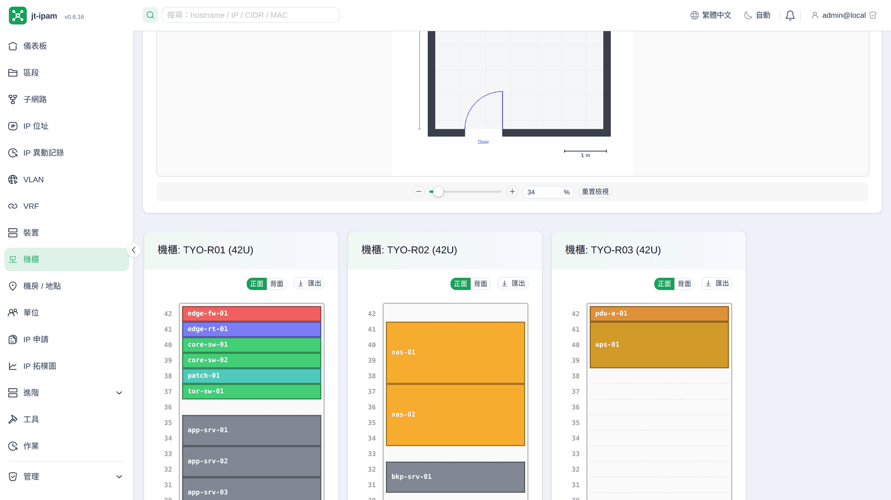
上傳機房平面底圖後，直接拖拉定位每一座機櫃（可旋轉、依實際 U 數標示、自動貼齊），對應真實機房配置；下方則是每座機櫃的 U 位示意圖，支援半 U、前後雙面，裝置依類型自動上色，一眼看出哪幾格還空著；鍍鉻層架與 IKEA IVAR 這類層架也畫得出來（見上方「不是每間機房都有 42U 機櫃」）。機櫃圖可匯出 draw.io / PNG / SVG，裝置清單另可匯出 CSV / Excel / ODS。Upload a floor-plan background and drag-place each rack (rotatable, U-aware, snap-to-grid) to mirror the real room; below it, each rack's U-diagram with half-U, front/rear and type-based colors makes empty slots obvious; chrome wire and IKEA IVAR-style shelving draws too (see “Not every server room has a 42U rack” above). Export diagrams as draw.io / PNG / SVG and the device list as CSV / Excel / ODS.サーバルームの下図をアップロードすれば、各ラックをドラッグで配置できます（回転、実際の U 数の反映、自動スナップに対応）。実際の部屋の配置をそのまま再現できます。その下には各ラックの U 位置図があり、ハーフ U と前面／背面に対応し、機器は種類ごとに自動で色分けされるので、どこが空いているかがひと目で分かります。スチールラックや IKEA IVAR のようなシェルフも描けます（上の「すべてのサーバルームに 42U ラックがあるわけではありません」を参照）。ラック図は draw.io / PNG / SVG へ、機器一覧は CSV / Excel / ODS へ書き出せます。
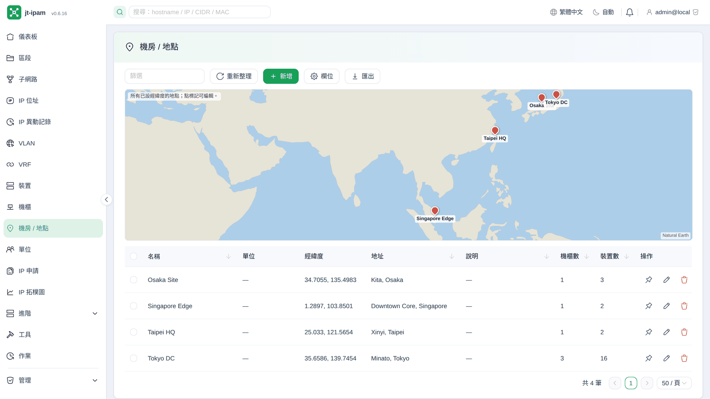
集中管理所有機房 / 地點：記錄地址與經緯度，並在世界地圖上標出各站點位置；清單同時顯示每個地點的機櫃數與裝置數，多站點的盤點與導覽一目了然。Manage all rooms / sites in one place: record addresses and coordinates and pin every site on a world map; the list also shows rack and device counts per location, so multi-site inventory is clear at a glance.すべてのサーバルームと拠点を一元管理します。住所と緯度経度を記録し、世界地図上に各拠点を示します。一覧には拠点ごとのラック数と機器数も表示されるため、複数拠点の棚卸しと把握が容易になります。
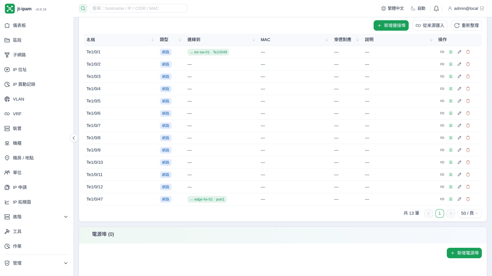
裝置明細把所在機櫃位置、規格與連接埠清單整合在同一頁；每個連接埠顯示自身實體 MAC、連線對端與跳接穿透對應，欄位皆可排序。連接埠會在 LibreNMS / OPNsense / Proxmox VE 同步時自動帶入，不必手動一筆筆建立，新裝置上線即有完整介面清單。Device detail brings rack position, specs and a sortable port list onto one page — each port shows its own MAC, connected peer and pass-through mapping. Ports are auto-populated on LibreNMS / OPNsense / Proxmox VE sync, so you never build them by hand; a new device arrives with its full interface list.機器の詳細ページは、設置されているラック内の位置、仕様、ポート一覧をひとつにまとめます。各ポートには自身の物理 MAC、接続先、パッチを貫通した対応関係が表示され、どの列でも並べ替えられます。ポートは LibreNMS / OPNsense / Proxmox VE の同期時に自動で取り込まれるため、一件ずつ手作業で作る必要はありません。新しい機器が入れば、そのインタフェース一覧がそろった状態で現れます。
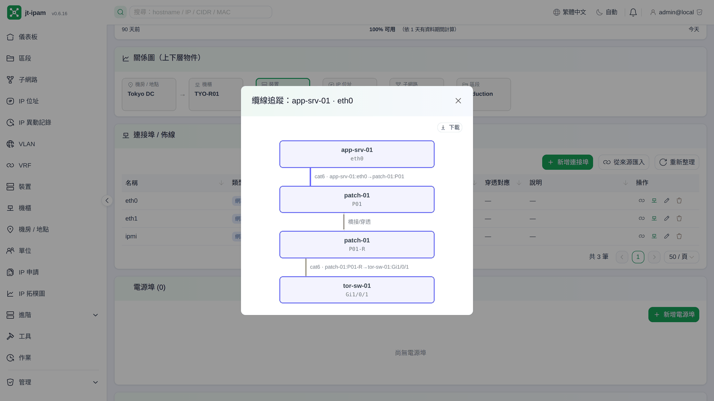
替連接埠建立纜線連線後，系統自動畫出端對端的連線路徑圖，一段段標出沿途經過哪台裝置、哪個埠，並能穿透跳接面板與橋接 NIC 繼續追下去。整條路徑可下載成 SVG / PNG / draw.io，無論是交接維運、畫網路文件或排查斷線都省事。Once ports are cabled, jt-ipam draws the end-to-end connection path hop by hop — through patch panels and bridge NICs — showing each device and port along the way. Export the whole path to SVG / PNG / draw.io, handy for handover, documentation or tracing a broken link.ポートにケーブル接続を登録すると、端から端までの経路図が自動で描かれます。途中でどの機器のどのポートを通るかを一段ずつ示し、パッチパネルやブリッジ NIC を貫通してさらに追跡します。経路全体は SVG / PNG / draw.io としてダウンロードでき、引き継ぎや構成図の作成、断線の切り分けが楽になります。
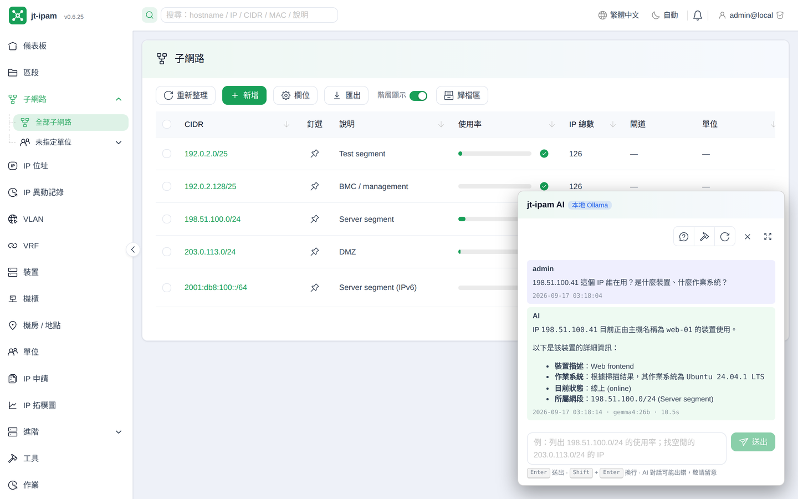
用自然語言就能查 IP、子網路、裝置：「列出 192.168.1.0/24 的使用率」「找一段三個連續 IP」之類的問題直接問。它透過 jt-ipam 內建的 MCP 直接讀你的即時資料，搭配語意搜尋（embedding + pgvector）與異常偵測，預設全程在自家機房的 LLM Server 上推論，資料不外流（要接 ChatGPT 這類 OpenAI 相容端點也可以，但那是要自己明確選的，設定頁會直說資料將送往外部）。Query IPs, subnets and devices in plain language — “show utilization for 192.168.1.0/24”, “find three consecutive free IPs”, and so on. It reads your live data through jt-ipam's built-in MCP, with semantic search (embeddings + pgvector) and anomaly detection, inferred on a local LLM Server by default, so your data never leaves the network (an OpenAI-compatible endpoint can be chosen explicitly, and the settings page says plainly that data then leaves).自然言語で IP・サブネット・機器を調べられます。「198.51.100.0/24 の使用率を出して」「空いている連続 3 個の IP を探して」といった質問をそのまま投げられます。jt-ipam 内蔵の MCP を通じてリアルタイムのデータを読み、セマンティック検索（embedding + pgvector）と異常検知を組み合わせます。既定では推論もすべて自社内の LLM サーバーで行われ、データは外部に出ません（ChatGPT のような OpenAI 互換エンドポイントにも接続できますが、それは明示的に選ぶ必要があり、設定ページでデータが外部へ送られることをはっきり表示します）。
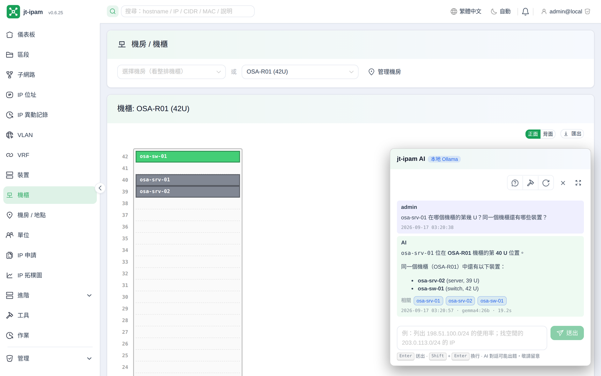
讓 AI 助你快速掌握機房狀況：AI 真的看得懂你的基礎設施，問「R1 機櫃還剩幾 U」「這段子網路幫我找三個連續 IP」「192.168.1.87 被誰占用」，它會直接讀實際資料回答，省去自己翻表對照。全部跑在本地 LLM Server，實測搭配 gemma4:26b 效果良好，回應快又準。The assistant genuinely understands your infrastructure: ask “how many U are left in rack R1”, “find three consecutive free IPs here” or “who's using 192.168.1.87”, and it answers from real data instead of making you dig through tables. It all runs on local LLM Server — gemma4:26b works well in our testing, fast and accurate.このアシスタントは基盤を本当に理解しています。「ラック R1 はあと何 U 空いているか」「このサブネットで連続した空き IP を 3 つ探して」「198.51.100.87 は誰が使っているか」と尋ねれば、表を掘り返させる代わりに実データから答えます。すべてローカルの LLM サーバーで動作し、検証では gemma4:26b が速く正確でした。
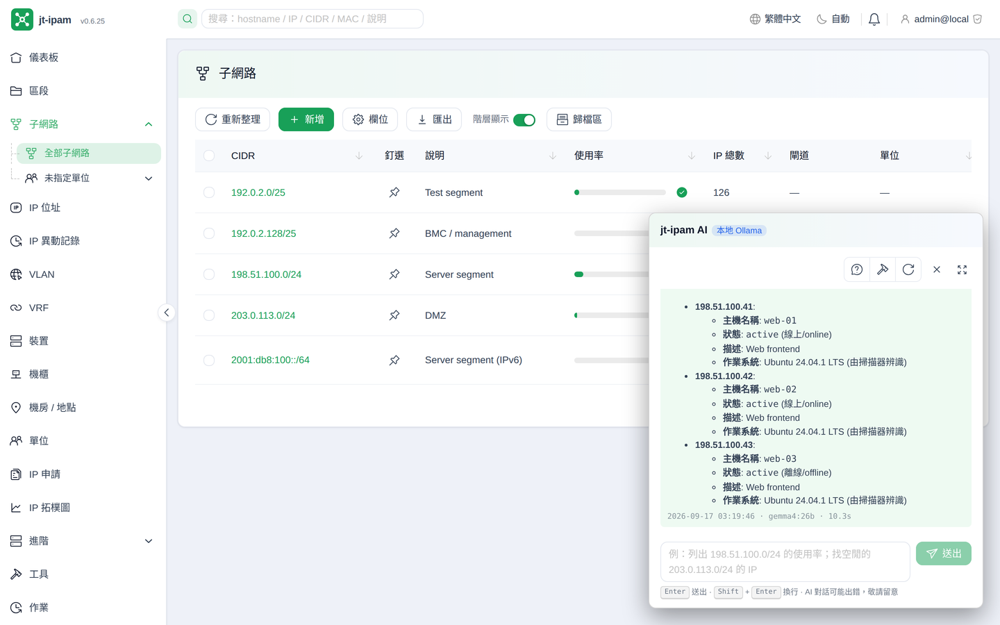
AI 對話會帶入你目前所在的頁面：在某個子網路頁打開助手，直接問「這幾個 IP 各是誰、接在哪台交換器」，它一次把多筆查清楚並逐筆引用實際資料，不必一個一個點開。需要改資料時還會先列出待確認動作，按下確認才執行。The assistant picks up the page you're on: open it on a subnet and ask “who owns these IPs and which switch are they on” — it answers several at once, citing real data per entry, instead of opening each one. For changes it lists a confirm-first action and only runs it after you approve.AI との対話は、いま開いているページの文脈を引き継ぎます。あるサブネットのページでアシスタントを開き、「これらの IP はそれぞれ誰のもので、どのスイッチに繋がっているか」と尋ねれば、一件ずつ開かなくても複数まとめて調べ、各件について実データを引用して答えます。データを変更する場合は、まず実行予定の操作を提示し、承認を押してから実行します。
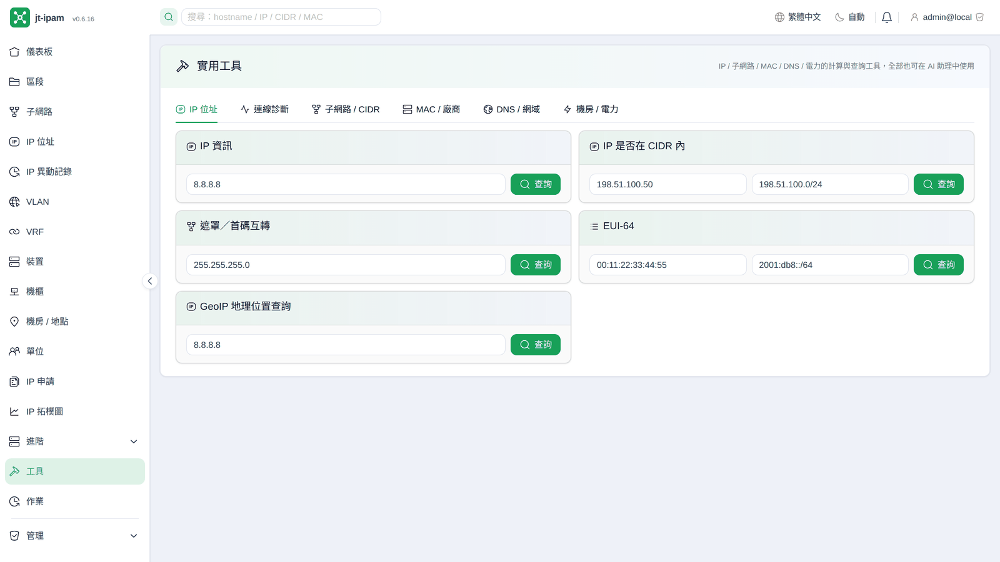
內建一站式網路規劃工具，分 IP/CIDR、MAC、DNS/郵件、機房/電力四類：CIDR 計算與切割、IP 範圍 ↔ CIDR、多網段聚合、遮罩換算；MAC 格式轉換、EUI-64、OUI 廠商查詢；DNS 解析、郵件網域檢查（SPF / DKIM / DMARC）、GeoIP；以及 PDU 電力 / 散熱 / UPS 續航試算。不必再開一堆線上計算器，且全程在自家機房完成、查詢不外送。A one-stop set of network-planning utilities in four groups — IP/CIDR (calc, split, range↔CIDR, aggregate, netmask), MAC (reformat, EUI-64, OUI lookup), DNS/mail (resolution, SPF/DKIM/DMARC, GeoIP) and facility/power (PDU power, heat, UPS runtime). No more juggling online calculators — and it all runs on-prem, nothing leaves your network.ネットワーク設計のための実用ツールを内蔵しています。IP/CIDR、MAC、DNS／メール、設備／電力の四分類です。CIDR の計算と分割、IP 範囲 ↔ CIDR、複数ネットワークの集約、サブネットマスクの換算。MAC の形式変換、EUI-64、OUI ベンダー検索。DNS 解決、メールドメインの確認（SPF / DKIM / DMARC）、GeoIP。そして PDU の電力・発熱・UPS 稼働時間の試算。オンライン計算機をいくつも開く必要はなく、すべて自社設備内で完結し、問い合わせ内容が外部に出ることもありません。
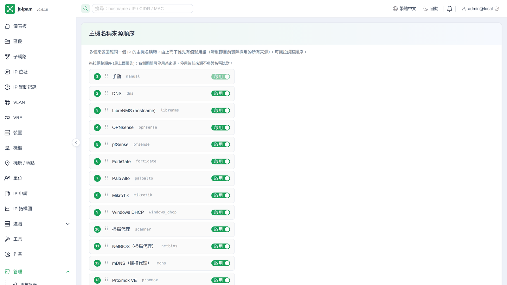
同一個 IP 或裝置，可能同時被掃描代理、DNS、LibreNMS、OPNsense、Proxmox VE、Wazuh、Zabbix、AdGuard 回報不同的值，到底以誰為準？主機名稱、ARP / MAC、裝置名稱、裝置型號與作業系統各自都有一份來源優先順序，用拖拉排序自訂、可個別停用；系統據此自動解析出最可信的結果，不再每次同步互相蓋來蓋去。The same IP or device may be reported with different values by the scan agent, DNS, LibreNMS, OPNsense, Proxmox VE, Wazuh, Zabbix and AdGuard — which one wins? Hostname, ARP / MAC, device name, device model and OS each have their own source-precedence list you reorder by drag (and can disable individually); jt-ipam resolves the most trustworthy value accordingly, so syncs stop overwriting one another.同じ IP や機器について、スキャンエージェント・DNS・LibreNMS・OPNsense・Proxmox VE・Wazuh・Zabbix・AdGuard がそれぞれ異なる値を報告することがあります。どれを採るべきでしょうか。ホスト名、ARP / MAC、機器名、機器の型番、OS のそれぞれにソース優先順位のリストがあり、ドラッグで並べ替え、個別に無効化できます。jt-ipam はそれに従って最も信頼できる値を解決するので、同期のたびに互いを上書きし合うことがなくなります。
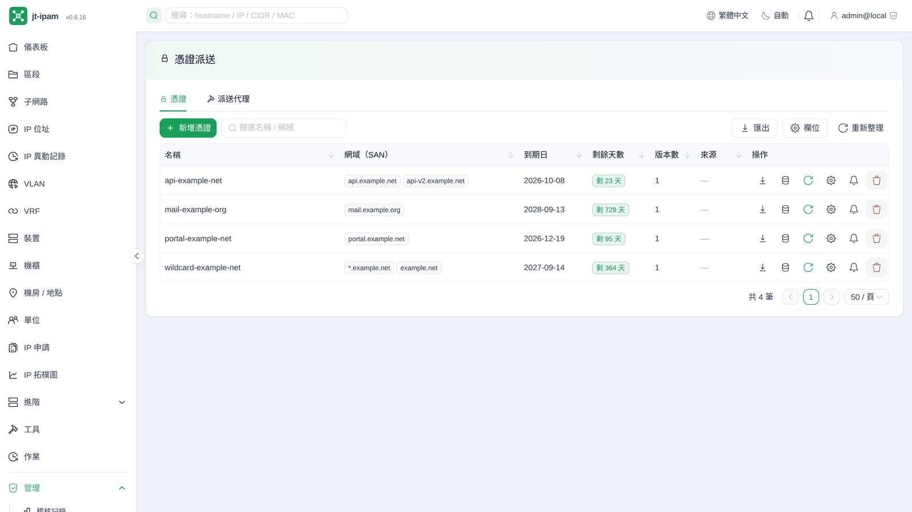
把商業憑證或 Let's Encrypt 憑證集中保管在一處（私鑰 AES-GCM 加密），再由各站台的輕量代理（純 bash，只相依 curl）自動拉取部署到 nginx / Apache / Caddy / HAProxy / Postfix / Dovecot / Proxmox VE / PMG / PBS / Zimbra 等服務，套用前先做設定測試、失敗自動還原、部署後重載服務。憑證檔案可以手動上傳或設定 URL / SFTP 來源定期自動同步，同步時若偵測到缺中繼或根憑證會用系統信任庫自動補齊完整鏈，憑證快到期或內容飄移會主動告警──再也不用每次續簽就手動登入每一台貼憑證。Windows / IIS 另有 PowerShell 代理（Server 2019 以上內建，不裝額外模組）：匯入 Windows 憑證存放區、換上 HTTPS 繫結，再實際連線確認送出的是新憑證，不對就自動還原。Keep commercial or Let's Encrypt certificates in one vault (private keys AES-GCM encrypted); a lightweight per-site agent (pure bash, curl-only) pulls and deploys them to nginx / Apache / Caddy / HAProxy / Postfix / Dovecot / Proxmox VE / PMG / PBS / Zimbra and more — config-testing before apply, auto-rollback on failure, and reloading the service afterwards. Certificate files can be uploaded manually or pulled from a URL / SFTP source on a periodic sync; missing intermediate or root certs are auto-completed from the system trust store, and expiry or drift raises an alert — no more logging into every host to paste certs at each renewal. Windows / IIS has its own PowerShell agent (built into Server 2019+, no extra modules): it imports into the Windows certificate store, repoints the HTTPS binding, then opens a real TLS connection to confirm the new certificate is being served — and rolls back if it is not.商用証明書や Let's Encrypt の証明書をひとつの保管庫にまとめます（秘密鍵は AES-GCM で暗号化）。各拠点の軽量エージェント（純粋な bash、依存は curl だけ）がそれを取得し、nginx / Apache / Caddy / HAProxy / Postfix / Dovecot / Proxmox VE / PMG / PBS / Zimbra などへ配備します。適用前に設定テストを行い、失敗すれば自動的に元へ戻し、配備後はサービスを再読み込みします。証明書ファイルは手動でアップロードするほか、URL / SFTP のソースを指定して定期的に同期できます。同期時に中間証明書やルート証明書の不足を検出すると、システムの信頼ストアから補って完全なチェーンにします。期限が近づいたり内容が食い違ったりすれば警告します。更新のたびに全台へログインして貼り付ける作業はもう不要です。Windows / IIS には別途 PowerShell エージェントがあります（Server 2019 以降に標準搭載、追加モジュール不要）。Windows 証明書ストアへ取り込み、HTTPS バインディングを張り替え、実際に接続して新しい証明書が提供されていることを確認し、そうでなければ自動的に元へ戻します。
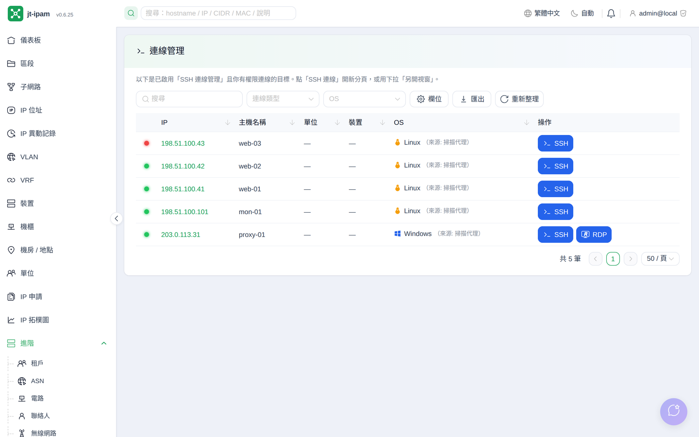
直接從 IP 或裝置開啟 SSH 終端機、SFTP 檔案瀏覽器（上下傳檔案，獨立開關、與 SSH 同等強度的權限與稽核）、RDP 與 VNC 桌面、Proxmox VE 主控台（VM 走 noVNC、容器 CT 走 xterm）與 BMC 序列主控台（IPMI SOL，不經作業系統的獨立連線）（RDP / VNC / PVE / BMC 為 Beta），全程在瀏覽器內，不必再裝 PuTTY / 遠端桌面 / 各廠 KVM 等用戶端。連線帳密預設不儲存（僅連線當下傳送），也可選擇存進個人加密金庫（by-user、AES-GCM 加密，私鑰 / 密碼逐欄加密）；依逐物件權限控管誰能連哪一台，每次開閉連線都留稽核；RDP / VNC 可送出被作業系統攔截的特殊組合鍵（Ctrl + Alt + Del、F1～F12、⊞ Win / ⌘…），並支援自動縮放符合視窗、以目前視窗大小重連取得原生清晰畫面。Open an SSH terminal, an SFTP file browser (upload/download, its own toggle with the same permission strength and audit as SSH), an RDP or VNC desktop, a Proxmox VE console (noVNC for VMs, xterm for CT containers) and a BMC out-of-band serial console (IPMI SOL) (RDP / VNC / PVE / BMC are Beta) straight from an IP or device — entirely in the browser, with no PuTTY / remote-desktop client / vendor KVM to install. Credentials are not stored by default (sent only at connect time) and can optionally be saved to a per-user AES-GCM-encrypted vault; per-object permissions control who may reach each target, and every session open/close is audited; RDP / VNC can send special key combos the OS would otherwise intercept (Ctrl + Alt + Del, F1–F12, ⊞ Win / ⌘…), and support auto-fit-to-window plus reconnecting at the current window size for a crisp native picture.IP や機器から直接、SSH 端末、SFTP ファイルブラウザ（アップロード／ダウンロード。独立した切り替えを持ち、SSH と同等の権限管理と監査が適用されます）、RDP と VNC のデスクトップ、Proxmox VE コンソール（VM は noVNC、コンテナ CT は xterm）、BMC シリアルコンソール（IPMI SOL。OS を介さない独立した経路）を開けます（RDP / VNC / PVE / BMC は Beta）。すべてブラウザ内で完結し、PuTTY やリモートデスクトップ、各社の KVM クライアントを入れる必要はありません。接続時の資格情報は既定では保存せず（接続時に送るだけです）、必要なら利用者ごとの暗号化保管庫に保存できます（ユーザー単位・AES-GCM・項目ごとの暗号化）。誰がどの機器へ接続してよいかはオブジェクト単位で制御し、接続の開始と終了はすべて監査に残ります。RDP / VNC では OS が横取りする特殊なキーの組み合わせ（Ctrl + Alt + Del、F1～F12、⊞ Win / ⌘ など）を送信でき、ウィンドウへの自動フィットや、現在のウィンドウサイズでの再接続による等倍の鮮明な表示にも対応します。
安全是從套件開發起就列入核心要求。Security is a core requirement from the very start of development.セキュリティは開発の最初から中核の要件です。
argon2id 雜湊密碼、TOTP 兩階段、JWT(access 15 分 / refresh 14 天)、帳號鎖定。argon2id hashing, TOTP MFA, JWT (15-min access / 14-day refresh), account lockout.argon2id によるパスワードのハッシュ化、TOTP による二段階認証、JWT（アクセス 15 分／リフレッシュ 14 日）、アカウントロック。
幾個內建預設角色，加上物件層級授權 (單位 / 區段 / 子網路 / 裝置…) 與階層繼承。A few built-in preset roles plus object-level grants (tenant / section / subnet / device…) with hierarchy inheritance.いくつかの組み込みロールに加え、オブジェクト単位の権限付与（組織／セクション／サブネット／機器など）と階層継承。
所有變更逐筆雜湊串接，可驗證是否被竄改；明細含變更前後對照。Every change is hash-chained and verifiable against tampering; diffs show before/after.すべての変更をハッシュで連鎖させ、改ざんの有無を検証できます。明細には変更前後の対比が含まれます。
對齊 OWASP Top 10:2025，每個模組與 PR 都過逐項自我檢核；嚴格 CSP、安全標頭、伺服器端授權。Aligned with OWASP Top 10:2025 — every module and PR passes the checklist; strict CSP, security headers, server-side authz.OWASP Top 10:2025 に準拠し、すべてのモジュールと PR がチェックリストを通過します。厳格な CSP、セキュリティヘッダ、サーバー側での権限判定。
不用 Docker、不依賴雲端；systemd + apt 直接跑在虛擬機與容器。No Docker, no cloud; runs on VMs and containers via systemd + apt.Docker もクラウドも不要。systemd + apt で仮想マシンやコンテナ上に直接動きます。
phpIPAM 走 SSH tunnel 匯入；OPNsense / LibreNMS / Wazuh / Zabbix 定時排程拉取，單向、不改動來源。phpIPAM import over SSH tunnel; OPNsense / LibreNMS / Wazuh / Zabbix pulled on a schedule — one-way, non-invasive.phpIPAM は SSH トンネル経由で取り込み、OPNsense / LibreNMS / Wazuh / Zabbix は定期スケジュールで取得します。一方向で、元のシステムは変更しません。
預設走自架 LLM Server，資料不外流。問答、摘要、AI 巡檢都在自家機房完成（也可明確改接 OpenAI 相容端點，選了會顯示資料外送提示）。（規則式的「異常偵測」是另一個功能：那講的是量到的事實，AI 巡檢講的是模型推測，刻意分開呈現。）Powered by a self-hosted LLM Server by default — data never leaves your network. Q&A, summaries and AI review all run on-prem (an OpenAI-compatible endpoint can be chosen explicitly, with a notice that data then leaves). (Rule-based anomaly detection is a separate feature: it reports measured facts, while AI review reports inference — deliberately kept apart.)既定では自社運用の LLM サーバーを使うため、データは外部に出ません。質問応答、要約、AI 点検はすべて自社設備内で完結します（OpenAI 互換エンドポイントを明示的に選ぶこともでき、その場合はデータが外部へ出る旨を表示します）。（ルールベースの「異常検知」は別の機能です。あちらは計測された事実を、AI 点検はモデルの推測を扱うため、意図的に分けて示しています。）
用自然語言查 IP / 子網路 / 裝置，透過 jt-ipam 內建的 MCP 工具直接讀取你的 IPAM 資料。Ask about IPs / subnets / devices in natural language; jt-ipam's built-in MCP tools read your live IPAM data.IP／サブネット／機器を自然言語で尋ねられます。jt-ipam 内蔵の MCP ツールがリアルタイムの IPAM データを読み取ります。
標記異常使用模式與失聯 IP，協助提前發現問題。Flags unusual usage patterns and unreachable IPs to surface issues early.通常と異なる利用パターンや応答のない IP を示し、問題の早期発見を助けます。
以 embedding 向量 (LLM Server 嵌入模型 + pgvector) 找相關物件，不只關鍵字比對；模型可自選，設定頁能當場檢查維度是否相符。Vector search over embeddings (your chosen LLM Server model + pgvector) finds related objects, beyond keyword matching; the settings page verifies the model's dimension on the spot.埋め込みベクトル（選択した LLM サーバーのモデル + pgvector）で関連オブジェクトを探します。キーワード一致にとどまりません。モデルは自由に選べ、設定ページで次元が一致しているかをその場で確認できます。
內建 MCP 伺服器 (stdio 與 Streamable HTTP)，讓外部 LLM 客戶端也能直接操作 IPAM。Built-in MCP server (stdio & Streamable HTTP) lets external LLM clients drive the IPAM too.MCP サーバー（stdio と Streamable HTTP）を内蔵しており、外部の LLM クライアントからも IPAM を操作できます。
助理對話自動持久化，可回溯、管理與稽核歷次問答。Assistant conversations are persisted — review, manage and audit past Q&A.アシスタントとの対話は自動的に保存され、過去のやり取りを振り返り、管理し、監査できます。
自由切換 chat / embedding 模型，直接列出 LLM Server 已安裝標籤，全域一處設定；也可改接 OpenAI 相容端點（會明白提示資料將送往外部）。Switch chat / embedding models freely, list installed LLM server tags, configured in one place; an OpenAI-compatible endpoint can be used instead, with an explicit notice that data then leaves your network.チャット用と埋め込み用のモデルを自由に切り替えられ、LLM サーバーに導入済みのタグをそのまま一覧表示します。設定は一箇所にまとまっています。OpenAI 互換エンドポイントに切り替えることもできます（その場合はデータが外部へ送られる旨を明示します）。
排程讓模型檢視 IPAM 資料，找出可疑、不合理或有資安疑慮之處 —— 管理介面落在一般網段、久未出現卻仍登記在用、命名與實際用途不符。每筆發現都附上依據資料，可點進去查證；判定為誤報忽略後，往後的巡檢不會再跳出來。On a schedule, the model reviews your IPAM data for anything suspicious, inconsistent or a security concern — management interfaces in general-purpose subnets, addresses recorded as in use but never seen alive, names that disagree with the data. Every finding cites the records it came from, and dismissing one as a false positive keeps it dismissed on later runs.スケジュールに従ってモデルが IPAM のデータを見直し、不審な点・辻褄の合わない点・セキュリティ上の懸念を洗い出します。たとえば一般用途のサブネットに置かれた管理インタフェース、使用中と記録されているのに一度も応答が確認されていないアドレス、データと食い違う命名などです。どの指摘にも根拠となったレコードが添えられ、誤検知として却下すれば以降の点検では出てきません。
註：本套件無內建 LLM Server，請在有 GPU 算力的主機安裝好 LLM Server 後，再提供給 jt-ipam 接取使用。Note: this package does not bundle an LLM Server. Set up an LLM Server on a host with GPU compute, then point jt-ipam at it.注：本パッケージに LLM サーバーは含まれていません。GPU を備えたホストに LLM サーバーを用意したうえで、jt-ipam から接続してください。
兩種部署方式：主力是 systemd + apt（預設強制 HTTPS）；對外 / 正式環境的標準是跑在高安全性 nginx 反向代理之後（TLS 1.2/1.3、HSTS preload、嚴格 CSP、完整安全標頭、隱藏上游版本指紋，後端只綁 loopback），內網 / 開發可用 uvicorn 自簽。另有選用的 Docker Compose。Two ways to deploy: the primary one is systemd + apt (HTTPS enforced by default). For internet-facing / production the standard is to run behind a hardened nginx reverse proxy (TLS 1.2/1.3, HSTS preload, strict CSP, full security headers, hidden upstream banner, backend bound to loopback); internal / dev can use a self-signed uvicorn. Plus an optional Docker Compose path.導入方法は二つあります。主力は systemd + apt です（既定で HTTPS を強制）。インターネットに公開する本番環境では、堅牢化した nginx リバースプロキシの背後で動かすのが標準です（TLS 1.2/1.3、HSTS preload、厳格な CSP、完全なセキュリティヘッダ、上流のバナー情報の秘匿、バックエンドはループバックのみにバインド）。社内や開発環境であれば uvicorn の自己署名で構いません。さらに選択肢として Docker Compose も用意しています。
⚠️ 必要：若你在前面再擋一層自己的反向代理／LB，那台邊緣機也必須設同一套安全標頭（HSTS／CSP／X-Frame-Options／Permissions-Policy／COOP／CORP），安全標頭不會自動跨多一跳存活——內建外部代理範本已含。⚠️ Required: if you put your own reverse proxy / LB in front, that edge box must set the same security headers (HSTS / CSP / X-Frame-Options / Permissions-Policy / COOP / CORP) — they don't survive an extra hop; the bundled external-proxy templates already do.⚠️ 必須：自前のリバースプロキシやロードバランサをさらに前段に置く場合、その境界の機器にも同じセキュリティヘッダを設定してください（HSTS／CSP／X-Frame-Options／Permissions-Policy／COOP／CORP）。セキュリティヘッダは一段余分に経由しても自動では引き継がれません。同梱の外部プロキシ用テンプレートには既に含まれています。
系統需求：Debian 12+ 或 Ubuntu 22.04+（64 位元）。
硬體：最低 2 核心 CPU / 4 GB 記憶體 / 20 GB 磁碟；建議 4 核心 / 8 GB / 40 GB 以上（保留給資料庫與備份成長）。選用的本地 LLM 請另跑於獨立主機、依模型自行配足記憶體 / 顯示記憶體，不含在此。
自動安裝：安裝腳本會自動裝好並設定 PostgreSQL 16、Python 3.11+、Node 20+、nginx 等相依套件，並自動產生所有金鑰。
更多：完整步驟與環境變數見 GitHub 上的 README 與 scripts/。
Requirements: Debian 12+ or Ubuntu 22.04+ (64-bit).
Hardware: minimum 2 vCPU / 4 GB RAM / 20 GB disk; recommended 4 vCPU / 8 GB / 40 GB+ (headroom for the database and backups). The optional local LLM runs on a separate host with its own RAM/VRAM and is not included here.
Auto-setup: the install script installs and configures PostgreSQL 16, Python 3.11+, Node 20+ and nginx, and generates all keys for you.
More: see the README and scripts/ on GitHub for full steps and env vars.システム要件：Debian 12 以降または Ubuntu 22.04 以降（64 ビット）。
ハードウェア：最低 2 vCPU / 4 GB メモリ / 20 GB ディスク。推奨は 4 vCPU / 8 GB / 40 GB 以上（データベースとバックアップの増加に備えて）。任意のローカル LLM は別ホストで動かし、モデルに応じたメモリ／VRAM を用意してください。ここには含まれません。
自動セットアップ：インストールスクリプトが PostgreSQL 16、Python 3.11 以降、Node 20 以降、nginx などの依存関係を導入・設定し、必要な鍵もすべて生成します。
詳細：手順と環境変数の全体は GitHub の README と scripts/ を参照してください。
# 前置：最小化系統可能沒有 curl（一行式安裝需要它）# prerequisite: a minimal system may not have curl (the one-liner needs it)# 前提：最小構成のシステムには curl が無いことがあります（一行インストールに必要です） sudo apt-get update && sudo apt-get install -y curl curl -fsSL https://raw.githubusercontent.com/jasoncheng7115/jt-ipam/main/scripts/bootstrap.sh | sudo bash
首次登入密碼：安裝程式會自動建立管理員帳號 admin 並產生一組隨機密碼，於安裝結束時印出一次（同時存到 /etc/jt-ipam/.admin-initial-password，僅 root 可讀；該檔在 /etc 之下、不在 web root 內，無法透過 HTTP 連到）。請登入後立即更換，之後即可安全刪除此檔（sudo rm /etc/jt-ipam/.admin-initial-password）；日後可用 create-admin --force-update CLI 重置（詳見 README）。
First-login password: the installer creates the admin account with a random password and prints it once at the end (also saved to /etc/jt-ipam/.admin-initial-password, root-only — under /etc, outside the web root, so never reachable over HTTP). Change it right after logging in, then you can safely delete the file (sudo rm /etc/jt-ipam/.admin-initial-password); reset later with the create-admin --force-update CLI (see the README).初回ログインのパスワード：インストーラが管理者アカウント admin を作成し、ランダムなパスワードを生成して、インストール終了時に一度だけ表示します（同時に /etc/jt-ipam/.admin-initial-password に保存されます。root のみ読み取り可能で、/etc 配下かつ web ルートの外にあるため HTTP からは到達できません）。ログイン後すぐに変更し、その後はこのファイルを削除して構いません（sudo rm /etc/jt-ipam/.admin-initial-password）。後から create-admin --force-update の CLI で再設定できます（README を参照）。
sudo bash /opt/jt-ipam/scripts/jt-ipam.sh upgrade
sudo bash /opt/jt-ipam/scripts/jt-ipam.sh uninstall
非優先模式。Docker Compose 屬選用 / 次要部署路徑，並非本專案優先或主力的部署模式——主力且建議的仍是上方的 systemd + apt。Compose 適合快速試用或容器優先的環境；相關檔案（含 gen-env.sh）都在 git clone 下來的 repo 的 deploy/docker/ 內，所以要先 clone。
Not the preferred mode. Docker Compose is an optional / secondary path and is not the project's preferred or primary deployment mode — systemd + apt above remains the recommended one. Use it for a quick trial or container-first setups; the files (including gen-env.sh) live in the cloned repo under deploy/docker/, so clone first.優先されるモードではありません。Docker Compose は任意かつ副次的な導入経路であり、本プロジェクトが優先する主力の方式ではありません。推奨は上記の systemd + apt です。Compose は手早く試したい場合やコンテナ中心の環境に向いています。関連ファイル（gen-env.sh を含む）は git clone したリポジトリの deploy/docker/ 内にあるため、先に clone してください。
# 前置：先裝 curl/git，再裝 Docker Engine（含 compose 外掛）# prerequisites: curl/git first, then Docker Engine (incl. the compose plugin)# 前提：先に curl/git を入れ、次に Docker Engine（compose プラグインを含む）を入れます sudo apt-get update && sudo apt-get install -y curl git curl -fsSL https://get.docker.com | sudo sh docker compose version # 應印出 v2.x# should print v2.x# v2.x と表示されるはずです git clone https://github.com/jasoncheng7115/jt-ipam.git cd jt-ipam/deploy/docker && ./gen-env.sh && docker compose up -d --build
前置需求：需要 git 與 Docker Engine（含 docker compose v2 外掛）。建議用官方腳本 get.docker.com 安裝（已含 compose 外掛）；不要用 apt install docker.io，那個版本沒有 docker compose 子指令。其他發行版請用各自的套件管理員裝 git。
Prerequisites: you need git and Docker Engine (with the docker compose v2 plugin). The official get.docker.com script installs both the engine and the compose plugin; do not use apt install docker.io — it lacks the docker compose subcommand. On non-Debian distros install git via your package manager.前提条件：git と Docker Engine（docker compose v2 プラグインを含む）が必要です。公式スクリプト get.docker.com ならエンジンと compose プラグインの両方が入ります。apt install docker.io は使わないでください。あちらには docker compose サブコマンドがありません。Debian 系以外のディストリビューションでは、各自のパッケージマネージャで git を導入してください。
首次登入密碼：gen-env.sh 會自動產生一組隨機 admin 密碼，印在它的輸出、並存進 .env 的 JT_IPAM_ADMIN_PASSWORD（檔案 0600）；首次啟動 backend 會用它建立 admin 帳號。登入後請立即更換。也可自己改 .env 指定，或留空、之後用 docker compose exec backend python -m app.cli.bootstrap create-admin … 手動建立。
First-login password: gen-env.sh generates a random admin password, prints it in its output and stores it as JT_IPAM_ADMIN_PASSWORD in .env (mode 0600); the backend creates the admin on first boot using it. Change it right after logging in. You can also set your own in .env, or leave it empty and create the admin later with docker compose exec backend python -m app.cli.bootstrap create-admin ….初回ログインのパスワード：gen-env.sh がランダムな admin パスワードを生成し、その出力に表示するとともに .env の JT_IPAM_ADMIN_PASSWORD に保存します（パーミッションは 0600）。バックエンドは初回起動時にそれを使って admin アカウントを作成します。ログイン後すぐに変更してください。.env に自分で指定することも、空のままにして後から docker compose exec backend python -m app.cli.bootstrap create-admin … で作成することもできます。
cd jt-ipam/deploy/docker && ./update.sh
./update.sh = git pull → docker compose build → docker compose up -d；backend 啟動時自動跑資料庫遷移（alembic upgrade head），不需手動。別用 jt-ipam.sh upgrade（那是 systemd 安裝專用）。
./update.sh = git pull → docker compose build → docker compose up -d; the backend auto-runs DB migrations (alembic upgrade head) on start. Do not use jt-ipam.sh upgrade — that is for the systemd install only../update.sh は git pull → docker compose build → docker compose up -d です。バックエンドは起動時にデータベースのマイグレーション（alembic upgrade head）を自動で実行するため、手動操作は不要です。jt-ipam.sh upgrade は使わないでください。あれは systemd での導入専用です。
# 有外網的主機：取得原始碼、build 並打包映像# internet-connected host: get the source, build & pack images# インターネットに接続できるホスト：ソースを取得し、ビルドしてイメージをまとめます git clone https://github.com/jasoncheng7115/jt-ipam.git cd jt-ipam/deploy/docker && ./offline-export.sh # → jt-ipam-images-<sha>.tar.gz（升級時先 git pull 取新版再 export）# → jt-ipam-images-<sha>.tar.gz (to upgrade: git pull first, then re-export)# → jt-ipam-images-<sha>.tar.gz（アップグレード時は先に git pull してから再度 export します） # 把壓縮檔 + 整個 jt-ipam repo 複製到內網主機，在 deploy/docker/ 下執行：# copy that archive + the whole jt-ipam repo to the offline host, then in deploy/docker/:# その書庫と jt-ipam リポジトリ全体をオフラインのホストへコピーし、deploy/docker/ で実行します： ./gen-env.sh && ./offline-import.sh jt-ipam-images-<sha>.tar.gz
沒有外網（連不到 Docker Hub）時：在有網路的主機 offline-export.sh 把四個映像（app + postgres/redis）打包成一個壓縮檔，帶到內網用 offline-import.sh 載入並啟動（--no-build --pull never，只用壓縮檔裡的映像）。升級就是再 export 新壓縮檔、複製過去、再 import 一次，.env 不動。
When the target host has no internet (can't reach Docker Hub): on an online host offline-export.sh packs all four images (app + postgres/redis) into one archive; carry it to the offline host and offline-import.sh loads + starts the stack (--no-build --pull never, images come only from the archive). Upgrade = re-export, copy the newer archive over, import again; .env stays.対象ホストがインターネットに接続できない（Docker Hub に到達できない）場合：接続できるホストで offline-export.sh を実行し、四つのイメージ（アプリ + postgres/redis）をひとつの書庫にまとめます。それをオフラインのホストへ持ち込み、offline-import.sh で読み込んで起動します（--no-build --pull never により、イメージは書庫からのみ取得されます）。アップグレードは、新しい書庫を再度 export してコピーし、もう一度 import するだけです。.env はそのままで構いません。